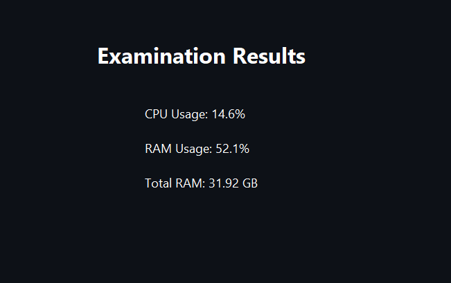
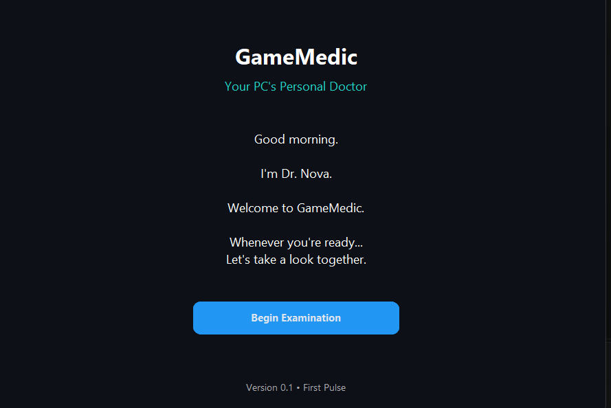
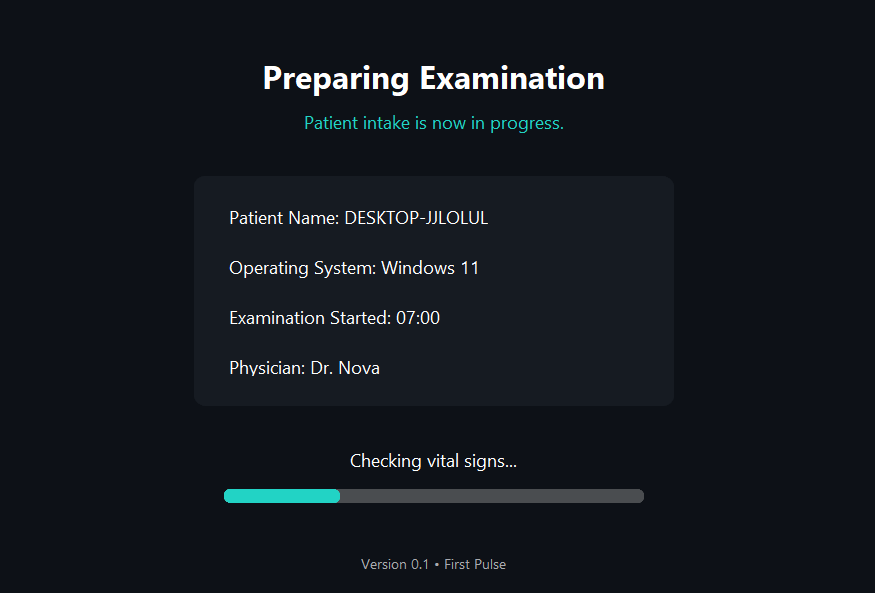

PROJECT 01 / IN DEVELOPMENT
GameMedic
My final-year project is a Windows application aimed at making PC performance problems easier to understand. The current version launches, collects basic system information and displays CPU and RAM usage.
I'm working towards clear, evidence-based troubleshooting guidance. Database history, diagnostic rules and a comparison with machine-learning methods are still planned.
Python · CustomTkinter · psutil · Git